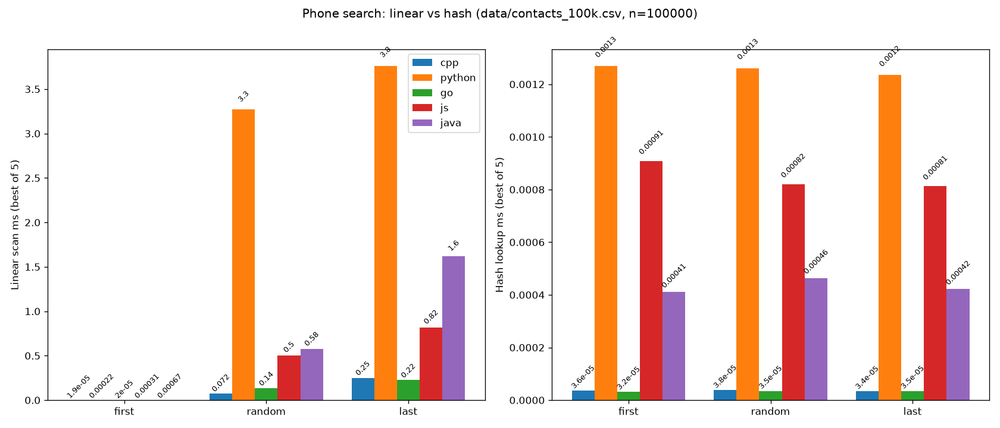
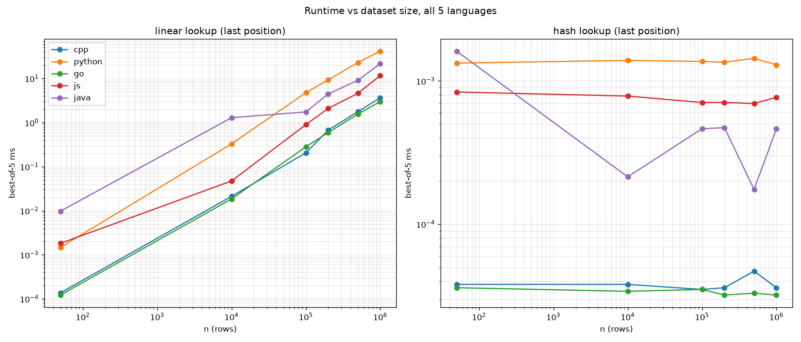
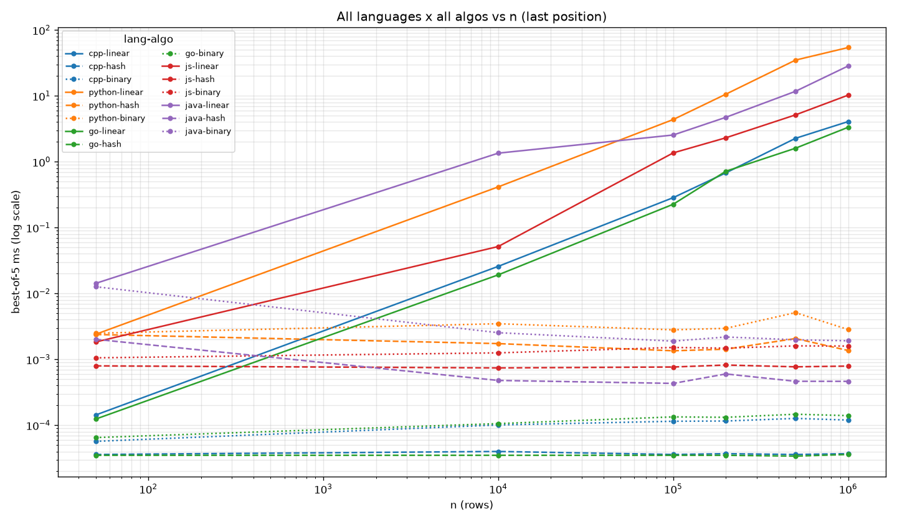
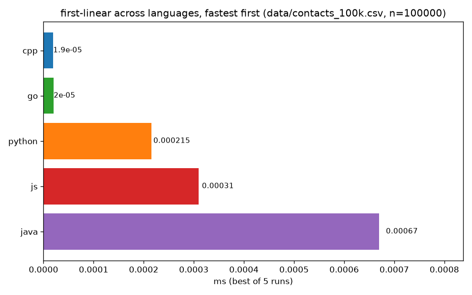
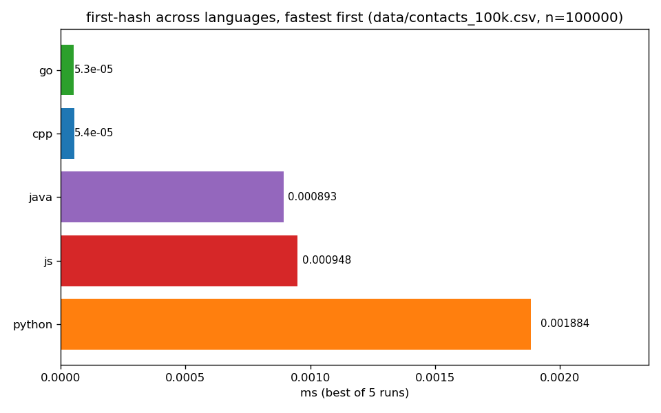
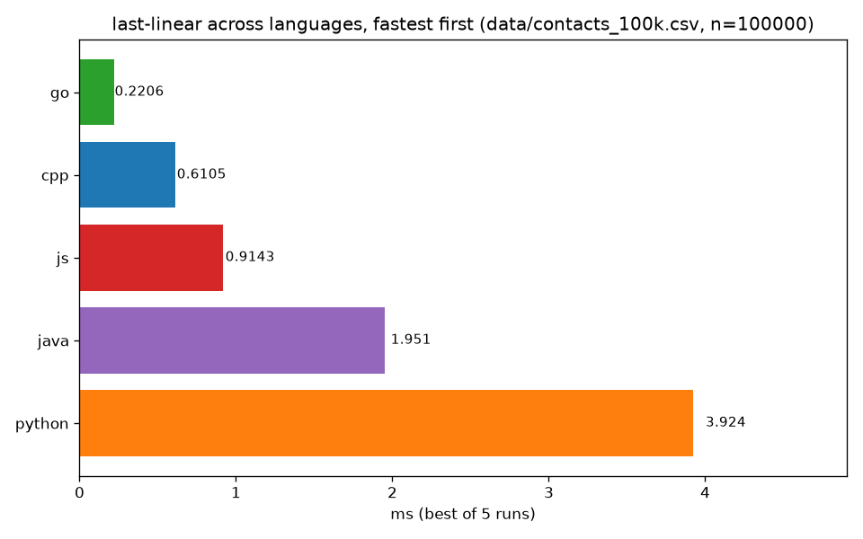
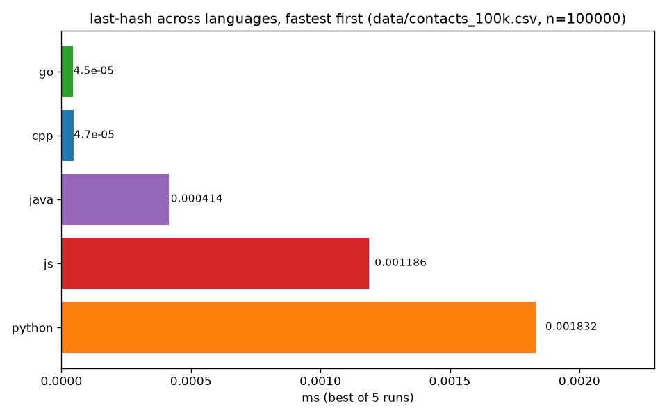
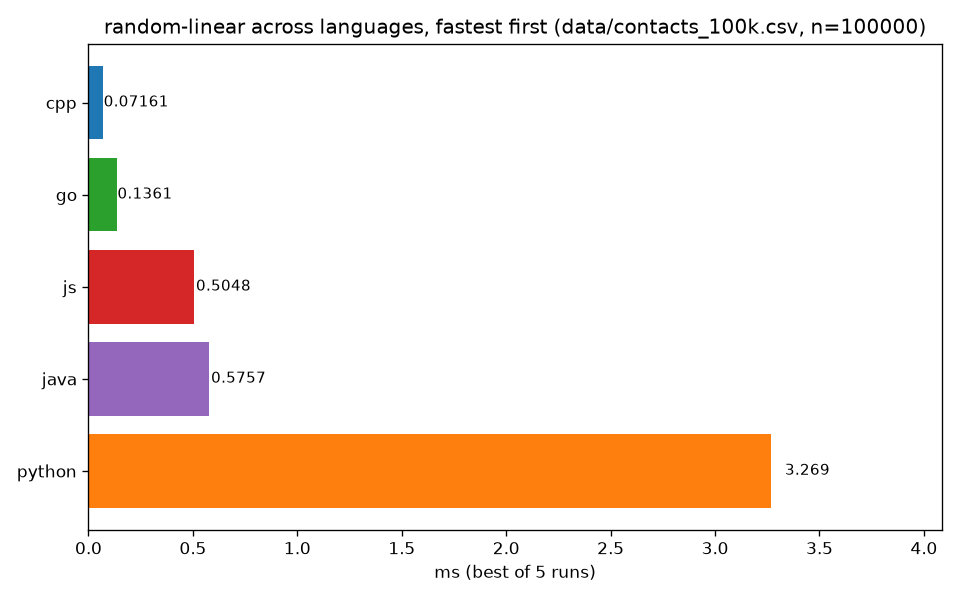
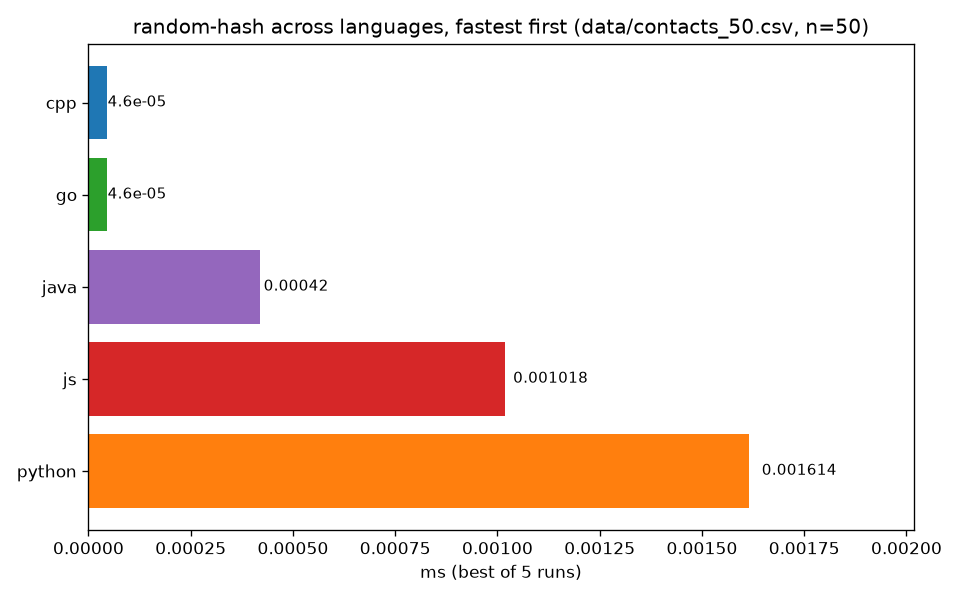

Interactive view of results.csv (best-of-5 per cell, same as benchmark/plot.py).
Serve over HTTP — file:// blocks fetch():
cd benchmark && python -m http.server 8000 # open http://localhost:8000/gallery.html








